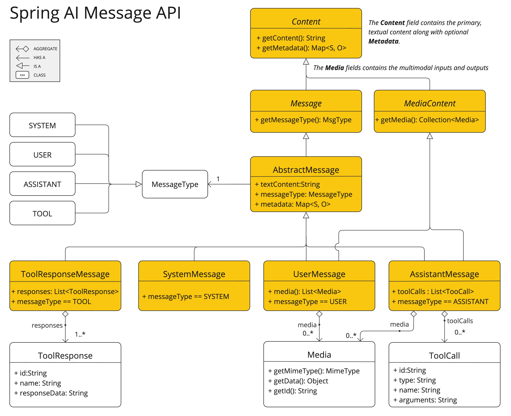

聊天模型API #
聊天模型API为开发人员提供了将人工智能支持的聊天完成功能集成到其应用程序中的能力。它利用预先训练的语言模型，如GPT（Generative pre-trained Transformer），对自然语言中的用户输入生成类似人类的响应。
API通常通过向人工智能模型发送提示或部分对话来工作，人工智能模型随后根据其训练数据和对自然语言模式的理解生成对话的完成或继续。然后将完成的响应返回给应用程序，应用程序可以将其呈现给用户或用于进一步处理。
Spring AI Chat Model API被设计为一个简单、可移植的界面，用于与各种AI模型交互，允许开发人员在不同的模型之间切换，只需最少的代码更改。
此外，在输入封装提示和输出处理ChatResponse等伴生类的帮助下，Chat Model API统一了与AI模型的通信。
您可以在available implementations部分中找到有关可用实现的更多信息，并在Chat Models comparison部分中找到详细的比较。
API概述 #
本节提供了Spring AI Chat Model API接口和相关类的指南。
Chat模型 #
下面是ChatModel接口定义：
public interface ChatModel extends Model<Prompt, ChatResponse> {
default String call(String message) {...}
@Override
ChatResponse call(Prompt prompt);
}
带有String参数的call（）方法简化了初始使用，避免了更复杂的Prompt和ChatResponse类的复杂性。
流式聊天模型 #
下面是StreamingChatModel接口定义：
public interface StreamingChatModel extends StreamingModel<Prompt, ChatResponse> {
default Flux<String> stream(String message) {...}
@Override
Flux<ChatResponse> stream(Prompt prompt);
}
stream（）方法采用类似于ChatModel的String或Prompt参数，但它使用反应式Flux API来流式处理响应。
提示 #
Prompt是一个ModelRequest，它封装了
消息对象和可选模型请求选项的列表。
public class Prompt implements ModelRequest<List<Message>> {
private final List<Message> messages;
private ChatOptions modelOptions;
@Override
public ChatOptions getOptions() {...}
@Override
public List<Message> getInstructions() {...}
// constructors and utility methods omitted
}
消息 #
消息接口封装了提示文本内容、元数据属性的集合和名为MessageType的分类。
接口定义如下：
public interface Content {
String getText();
Map<String, Object> getMetadata();
}
public interface Message extends Content {
MessageType getMessageType();
}
多模式消息类型还实现了提供媒体内容对象列表的``MediaContent接口。
public interface MediaContent extends Content {
Collection<Media> getMedia();
}
消息接口具有各种实现，这些实现对应于人工智能模型可以处理的消息类别：

聊天完成端点，根据会话角色区分消息类别，由MessageType有效映射。
例如，OpenAI识别不同对话角色（如系统、用户、功能或助手）的消息类别。
虽然术语MessageType可能意味着特定的消息格式，但在这种情况下，它有效地指定了消息在对话中发挥的作用。
对于不使用特定角色的AI模型，UserMessage``实现充当标准类别，通常表示用户生成的查询或指令。
聊天室选项 #
表示可以传递给AI模型的选项。ChatOptions类是ModelOptions的一个子类，用于定义几个可以传递给AI模型的可移植选项。
public interface ChatOptions extends ModelOptions {
String getModel();
Float getFrequencyPenalty();
Integer getMaxTokens();
Float getPresencePenalty();
List<String> getStopSequences();
Float getTemperature();
Integer getTopK();
Float getTopP();
ChatOptions copy();
}
此外，每个特定于模型的ChatModel/StreamingChatModel实现都可以有自己的选项，可以传递给AI模型。例如，OpenAI聊天完成模型有自己的选项，如logitBias、种子和用户。
这是一个强大的功能，允许开发人员在启动应用程序时使用模型特定的选项，然后在运行时使用Prompt请求覆盖它们。
Spring AI为配置和使用聊天模型提供了一个复杂的系统。
下面的流程图说明了Spring AI如何结合启动和运行时选项来处理聊天模型的配置和执行：
 启动和运行时选项的分离允许全局配置和特定于请求的调整。
启动和运行时选项的分离允许全局配置和特定于请求的调整。
聊天室响应 #
ChatResponse类的结构如下：
public class ChatResponse implements ModelResponse<Generation> {
private final ChatResponseMetadata chatResponseMetadata;
private final List<Generation> generations;
@Override
public ChatResponseMetadata getMetadata() {...}
@Override
public List<Generation> getResults() {...}
// other methods omitted
}
ChatResponse类保存AI模型的输出，每个生成实例包含单个提示产生的潜在多个输出之一。
ChatResponse类还携带关于人工智能模型响应的ChatResponseMetadata元数据。
生成 #
最后，Generation类从ModelResult扩展来表示模型输出（辅助消息）和相关元数据：
public class Generation implements ModelResult<AssistantMessage> {
private final AssistantMessage assistantMessage;
private ChatGenerationMetadata chatGenerationMetadata;
@Override
public AssistantMessage getOutput() {...}
@Override
public ChatGenerationMetadata getMetadata() {...}
// other methods omitted
}
可用的实现 #
该图说明了统一的接口ChatModel和StreamingChatModel.用于与来自不同提供商的各种AI聊天模型交互，允许在不同AI服务之间轻松集成和切换，同时维护客户端应用程序的一致API。

- OpenAI聊天完成（流媒体、多模态和功能调用支持）
- Microsoft Azure Open AI聊天完成（流媒体和函数调用支持）
- Ollama聊天完成（流媒体、多模态和功能调用支持）
- 拥抱面部聊天完成（无流媒体支持）
- 谷歌Vertex AI Gemini聊天完成（流媒体、多模态和功能调用支持）
- 亚马逊基岩
- Mistral AI聊天完成（流媒体和功能调用支持）
- 人工聊天完成（流媒体和功能调用支持）
聊天模型API #
SpringAIChatModelAPI构建在SpringAIGenericModelAPI之上，提供特定于聊天的抽象和实现。